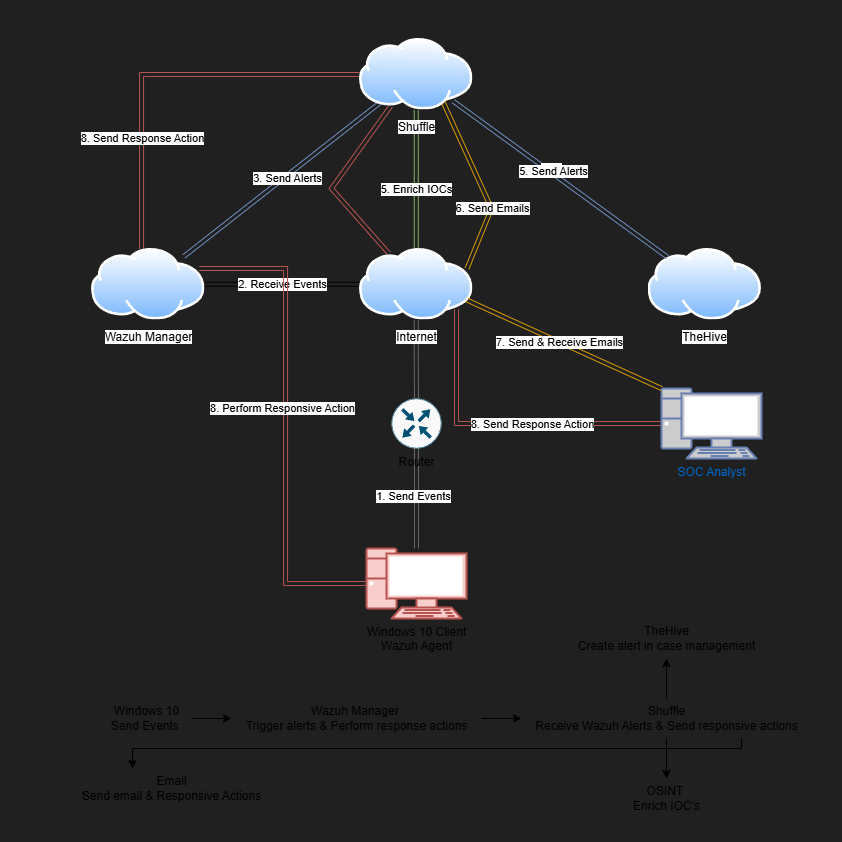
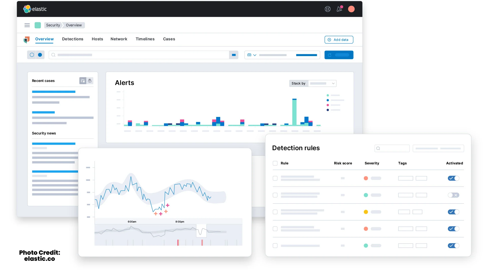
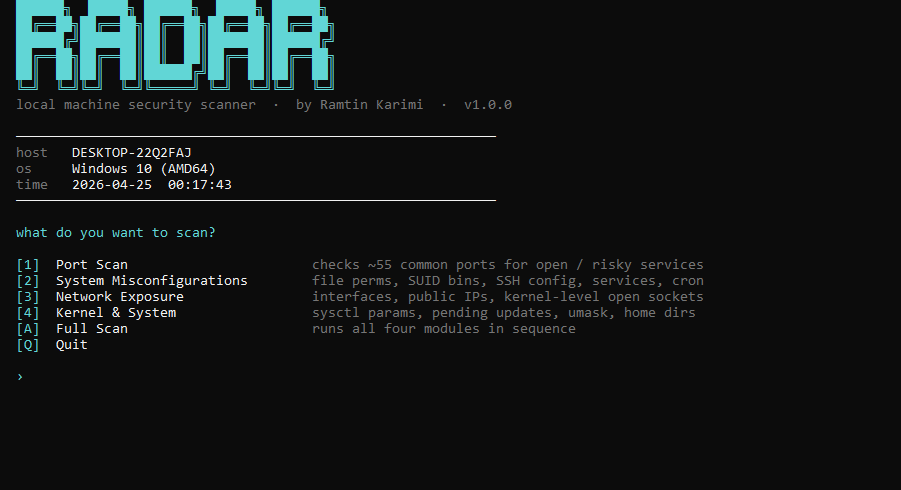
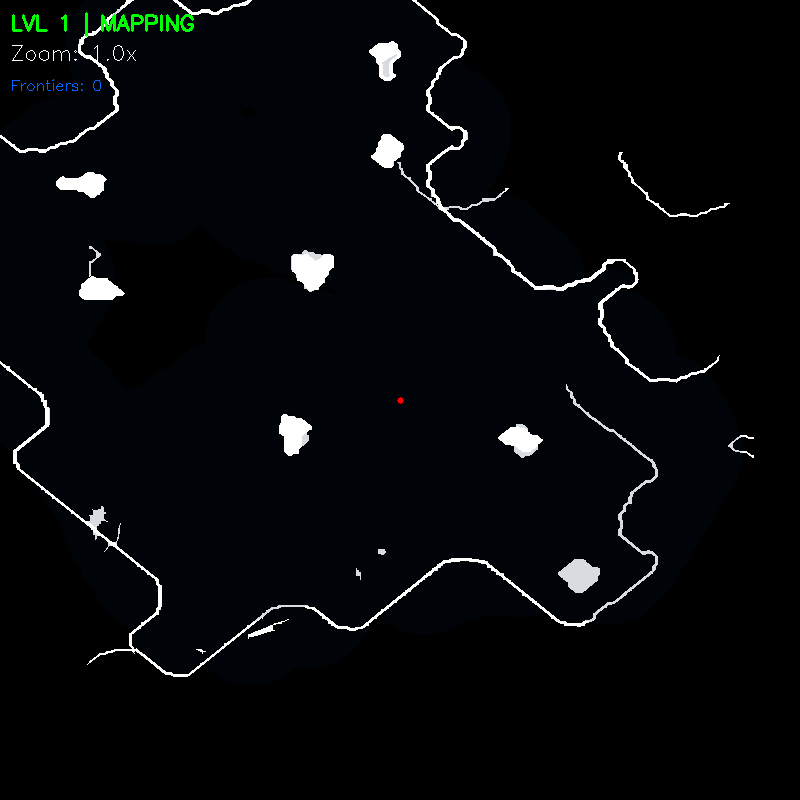
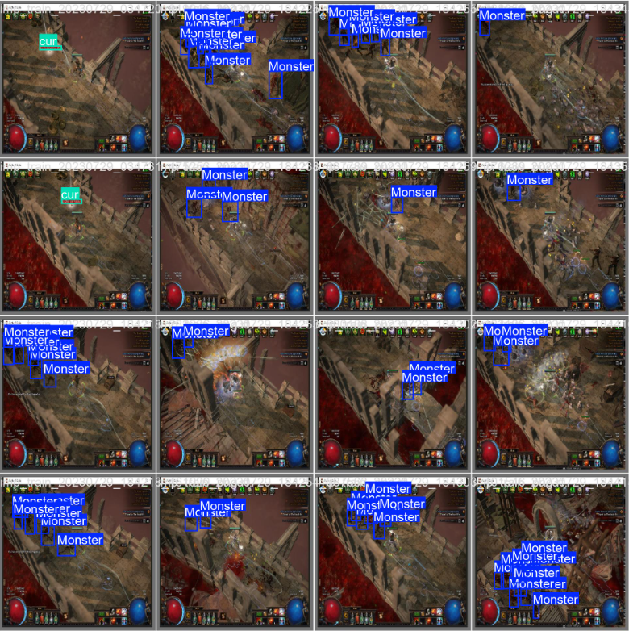

Cybersecurity / Automation
.

End-to-end SOC automation pipeline using Wazuh, Shuffle, and TheHive for alert triage, IOC enrichment, and responsive actions

Security Information and Event Management system built on the Elastic Stack — ingest, detect, and visualize threats at scale

Local machine security scanner — port scanning, file permission audits, kernel-level socket inspection, and sysctl hardening checks


Computer vision and pathfinding pipeline for Path of Exile, combining stitched minimap routing with object detection-driven gameplay signals